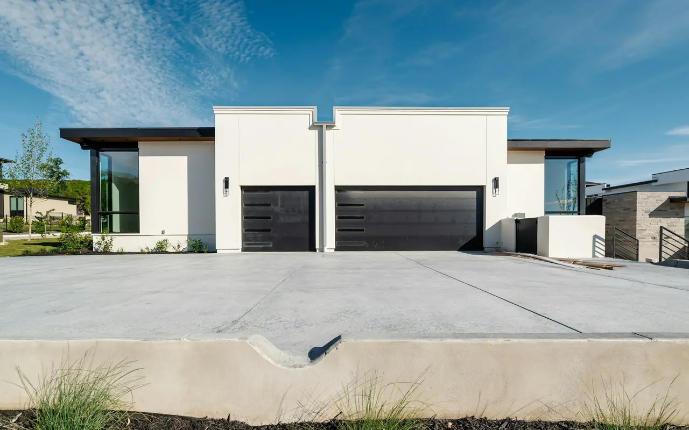

Genie Opener Repair & Installation
Genie Garage Door Openers Five Towns, Nassau County NY
Expert installation, diagnostics, and repairs for all Genie garage door opener systems across Cedarhurst, Hewlett, Lawrence, Woodmere, and Inwood. From high-speed MachForce screw drives to whisper-quiet StealthDrive belt systems, we stock genuine OEM parts for same-day service.
- Free Written Estimate
- Genuine OEM Parts on the Truck
- Aladdin Connect Smart Control
Genie Field Experts
Fast Genie Diagnostics & Genuine Parts
Genie openers are recognized across Long Island for mechanical innovation, featuring direct-drive screw systems and Intellicode encrypted rolling codes. Whether your opener has a worn trolley carriage, needs Safe-T-Beam optical realignment, or requires a control board replacement, Five Towns Garage Door delivers exact diagnostics.
If your Genie motor turns but the door will not travel, the screw drive or belt carriage has likely stripped due to excessive door weight or winter track stiffness. We carry genuine OEM replacement carriages on our trucks and calibrate the mechanical counterweight balance so the repair lasts.
We also install modern Genie smart systems equipped with Aladdin Connect, allowing full smartphone scheduling, monitoring, and remote operation from anywhere.
| Genie Screw Drive Carriage Replacement | $135 |
|---|---|
| Safe-T-Beam Sensor Realignment / Repair | $75 – $150 |
| Genie Motor Control Circuit Board | $160 |
| Intellicode Remote & Wireless Keypad Sync | $45 – $85 |
| Aladdin Connect Wi-Fi Smart Hub Add-On | $145 |
| New Genie StealthDrive Belt Package | Free Estimate |
| Genie MachForce 2 HPc Screw Drive | Free Estimate |
| Written On-Site Estimate | FREE |
Starting prices. Your exact price is confirmed in a free written estimate before any work begins.
Common Genie Problems
Genie Problems We Diagnose & Repair
Tell us what the opener is doing when you call — most Genie failures trace back to a handful of parts we keep on the truck.
Motor Turns, Door Won't Travel
The screw drive or belt carriage has likely stripped from excessive door weight or winter track stiffness. Over years of heavy use, the internal teeth of the carriage or belt trolley wear out. We replace it with a genuine OEM carriage and calibrate door balance.
Safe-T-Beam Blinking Red
A blinking red light signals an optical beam obstruction, lens oxidation from coastal humidity, or physical misalignment. We clean, realign, or replace the sensors until the sending light shows solid red and the receiving light solid green.
Opener Unresponsive
When a Genie powers on but ignores remotes and the wall button, the motor control circuit board is a common cause. We diagnose and replace the board on-site.
Remotes & Keypads
We sync Intellicode remotes and wireless keypads to your Genie opener — for a lost remote, a new keypad, or an added household vehicle.
Add Smartphone Control
The Aladdin Connect Wi-Fi smart hub adds smartphone status alerts, opening, closing, and scheduling to most modern openers.
Opener Fighting a Heavy Door
Stripped carriages usually start with a door that's too heavy for the opener to lift cleanly. If a spring is worn or the door is out of balance, we fix the springs and balance so the opener repair lasts.
Genie Model Lineup
Reliable Genie Openers We Install in the Five Towns
Screw drive for speed and fewer moving parts, belt drive for quiet, chain drive for lifting power on a budget, and wall-mount for a clear ceiling.
Genie MachForce 2 HPc
Direct-drive rotating steel threaded rod provides lifting speeds up to 12 inches per second with minimal moving parts. Outstanding reliability for high-use detached garages and heavy doors.
- Drive
- Rotating threaded steel rod
- Speed
- Up to 12 in/sec
- Moving Parts
- Minimal
- Best For
- High-use, heavy doors
Genie StealthDrive 7155
Powered by an ultra-quiet 1-1/4 HPc DC motor, featuring steel-reinforced rubber belt travel, integrated battery backup for coastal storm outages, and Aladdin Connect smart control.
- Motor
- 1-1/4 HPc DC
- Drive
- Steel-reinforced belt
- Battery Backup
- Integrated
- Smart Control
- Aladdin Connect
Genie ChainMax 1000
Heavy-gauge chain drive operating along a solid steel C-channel rail. Engineered for heavy carriage doors and budget-conscious homeowners who demand long-term lifting power.
- Drive
- Heavy-gauge chain
- Rail
- Solid steel C-channel
- Best For
- Heavy carriage doors
- Value
- Budget-conscious
Genie Wall Mount 6170
Compact direct-drive unit that mounts cleanly beside the torsion spring bar, completely eliminating ceiling rails and maximizing ceiling clearance for storage and high-profile vehicles.
- Mounting
- Beside torsion bar
- Drive
- Direct drive
- Ceiling Rail
- None
- Best For
- Storage, tall vehicles
See how screw, belt, chain, and wall-mount openers compare on our garage door openers overview, or compare with LiftMaster belt drive and wall-mount openers.
Smart & Safety Features
Genie Features Worth Knowing
Aladdin Connect
Full smartphone scheduling, monitoring, status alerts, and remote operation from anywhere. The universal retrofit module connects to most modern openers.
Intellicode Rolling Codes
Encrypted rolling codes change with every button press, so remotes can't be cloned the way older fixed-code openers could.
Safe-T-Beam Sensors
The photo-eye system that stops and reverses the door if the beam is blocked. Solid red sending and solid green receiving lights mean the beams are aligned.
Battery Backup
The StealthDrive 7155 includes integrated battery backup, keeping the door operating through South Shore coastal storm outages.
Screw Drive Speed
MachForce screw drives move the door up to twice as fast as traditional chain units, with fewer moving parts to wear.
Quiet DC Belt Drive
StealthDrive's DC motor and steel-reinforced rubber belt keep noise down in attached garages with living space nearby.
Repair or Replace
When to Repair Your Genie — and When to Replace It
A worn carriage or a blinking sensor rarely means a new opener. Age, repeat failures, and missing safety features do.
Usually Worth Repairing
- Motor turns but the door won't travel — carriage replacement
- Safe-T-Beam blinking red — sensor cleaning or realignment
- Opener ignores remotes and wall button — control board replacement
- You want smartphone control — add an Aladdin Connect hub
Time to Replace
- The opener is more than 15 years old
- It has failed multiple times
- It lacks photo-eye sensors and auto-reverse
- You want quieter DC belt drive operation or integrated battery backup
Serving the Five Towns
Genie Opener Service Across the Five Towns
Same-day Genie repair throughout the full Five Towns service area.
Questions & Technical Answers
Genie FAQ — Five Towns NY
Straight answers about Genie sensors, screw drives, carriages, and smart control.
Why does my Genie Safe-T-Beam sensor show a blinking red light?
A blinking red light on a Genie Safe-T-Beam sensor indicates an optical beam obstruction, lens oxidation from coastal humidity, or physical misalignment. A solid red sending light and solid green receiving light indicate proper alignment.
What are the advantages of the Genie MachForce screw drive?
Genie screw drives utilize a direct-drive rotating steel rod to move the door up to twice as fast as traditional chain units. With fewer moving parts, they provide extreme durability in high-demand residential environments.
Do you stock replacement Genie carriages on your service trucks?
Yes. Over years of heavy use, the internal teeth of the Genie screw drive carriage or belt trolley can wear out. We carry OEM Genie carriages and replace them same day across the Five Towns.
My Genie motor turns but the door won't move — what's wrong?
The screw drive or belt carriage has likely stripped due to excessive door weight or winter track stiffness. We carry genuine OEM replacement carriages on our trucks and calibrate the mechanical counterweight balance so the repair lasts. Call (516) 490-0931.
Can I add smartphone control to my existing Genie opener?
Yes. Genie offers the Aladdin Connect universal retrofit module, which connects to most modern openers to enable smartphone status alerts, opening, closing, and scheduling.
Google Reviews
What Customers Say
4.7 out of 5 stars from 15 Google reviews (as of September 2026). Reviews are quoted as written.
Having an issue with our external keypad/remote caused us to contact Five Towns Garage Doors. The company helped us contact the manufacturer for technical assistance instead of just charging us for a service call, saving us time and money. If we ever need garage door repair again, we will definitely use them.
My opener's lift chain completely derailed from the gear assembly, leaving our SUV totally trapped inside the bay. The tech arrived with all the correct replacement garage door parts right inside his work vehicle to fix the mechanism. He re-aligned the motor assembly and completed the entire garage door repair so we could finally get out of the house.
The garage door repair technician was friendly and helpful and he was there to fix my door not to just sell me a bunch of parts. He is the reason I would have this company back to my house. The scheduling was easy and the people were pleasant on the phone.
Genie Repair & Installation in the Five Towns
Carriages, Safe-T-Beam sensors, control boards, remotes, Aladdin Connect, and new StealthDrive and MachForce openers across Cedarhurst, Hewlett, Lawrence, Woodmere, and Inwood. Free written estimate.
Comparing brands? See LiftMaster openers or all opener types.